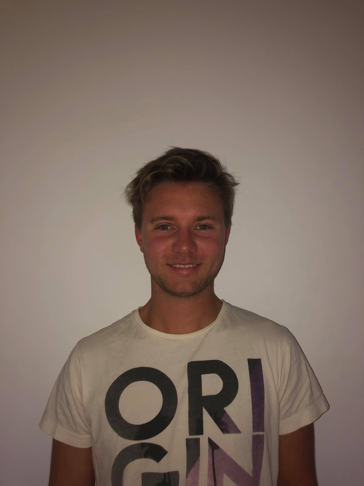

Alder: 21år.
Bosted: Mathopen/Bergen.
Skole: Høgskolen på Vestlandet.
Jobb: Holy Cow.
Litt mer om meg selv: Jeg er en 21 år gammel gutt fra Bergen. Jeg studerer Informasjonsteknologi på HVL i Bergen. Jeg er født i Bergen og har gått på skole her hele livet mitt. I januar 2018 gikk jeg inn i førstegangstjeneste og tilbrakte 8 måneder som menig på Kystvakt Svalbard. Hobbyene mine er å spille/se fotball, tennis, flyging og data.
